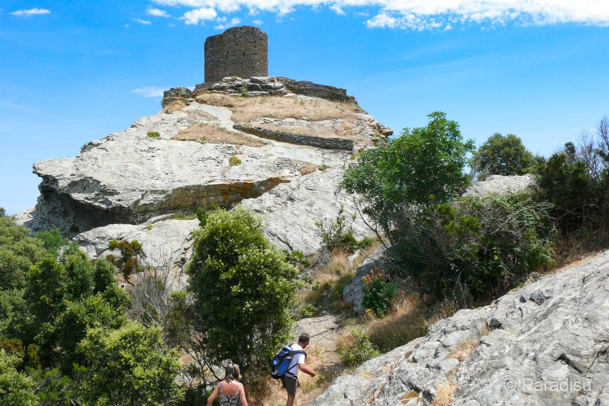

A közhiedelemmel és a helyi legendákkal ellentétben a ma látható kör alakú tornyot nem a rómaiak, hanem évszázadokkal később, a 16. században építették a genovaiak egy korábbi középkori erőd alapjaira. A helyszín szellemisége azonban kitörölhetetlenül összefonódott Lucius Annaeus Seneca, a híres sztoikus filozófus nevével. Claudius császár időszámításunk szerint 41-ben ide, a külvilágtól elzárt, vad és barátságtalan korzikai sziklák közé száműzte a tudóst, aki nyolc hosszú évet töltött ezen a vidéken. Seneca a feljegyzéseiben mély megvetéssel és elkeseredettséggel írt a kopár tájról és a szerint hercig, durva helyiekről, így a torony ma is a szellemi magány és a politikai kegyvesztettség egyetemes szimbóluma.
A Luri falu felett, mintegy 564 méteres magasságban magasodó torony elhelyezkedése a genovai katonai tervezés mesterműve. A függőleges sziklafal tetejére épített masszív kőhenger nemcsak megközelíthetetlen védelmi bástyaként szolgált, hanem kulcsfontosságú megfigyelőpontként is. A toronyőrség feladata az volt, hogy éber szemmel kövesse a Földközi-tenger hajóforgalmát, és füst- vagy tűzjelekkel azonnal riassza a völgyek lakóit, ha észak-afrikai kalózok vagy ellenséges flották tűntek fel a láthatáron. A romos állapotában is büszkén dacoló építmény a mai napig hirdeti az egykori Genovai Köztársaság tengeri dominanciáját és védelmi rendszerének hatékonyságát.
A Tour de Sénèque-hez vezető meredek, tölgyeseken és illatos maquis cserjésen átvezető gyalogtúra jutalma a sziget egyik legpazarabb vizuális élménye. Mivel a torony a Cap Corse félsziget keskeny gerincén helyezkedik el, a csúcsról egyedülálló módon egyszerre látható a félsziget keleti és nyugati partvidéke is. Kelet felé tekintve a Tirrén-tenger kékje és az olasz Toszkán-szigetvilág (köztük Elba szigete) rajzolódik ki, míg nyugat felé a Ligur-tenger drámai, sziklás öblei és a horizontba vesző naplemente látványa tárul elénk. Ez a panoráma teszi a Szeneka-tornyot a természetjárók és a fotósok abszolút bakancslistás helyszínévé.